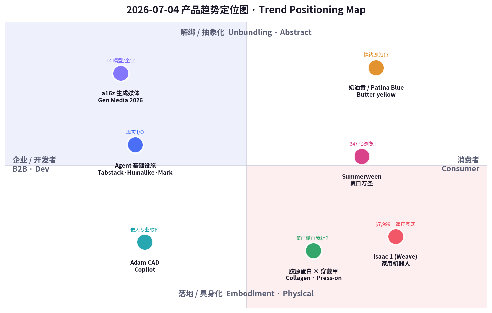
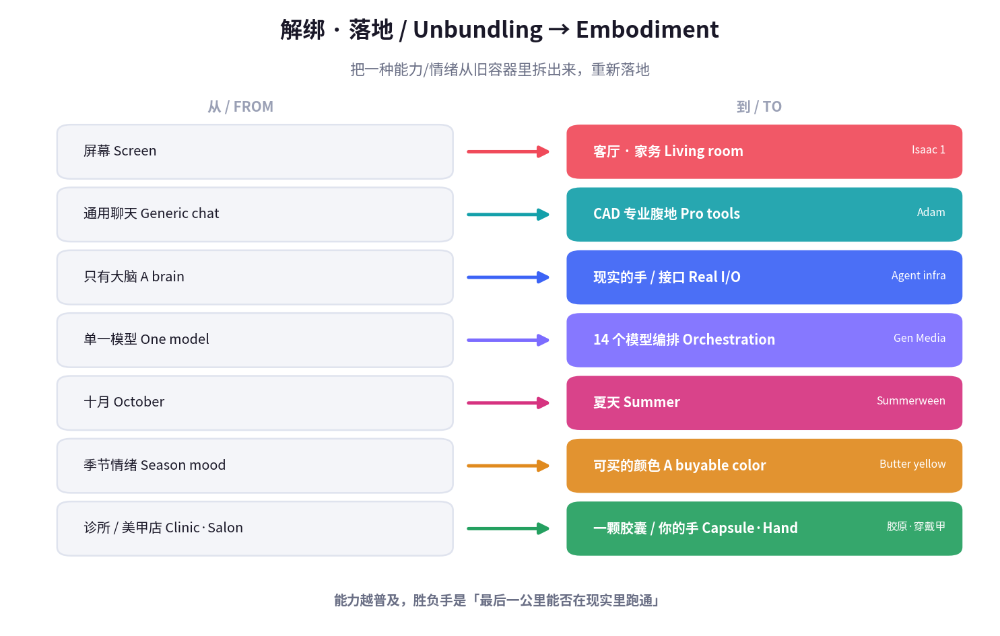

数据来源 / Sources: Hacker News（Weave Robotics Isaac 1 家用机器人、Infini-News、Frond）、Product Hunt 7 月榜（Tabstack（Mozilla 出品）、Humalike、Mark by Airtop、Adam CAD Copilot）、a16z《State of Generative Media 2026》、Google《Summergeist 2026》夏日趋势（butter yellow 指甲、summerween）、Etsy 2026 夏季卖家报告（年度色 Patina Blue）、Collagen 市场报告（Grand View / FMI）、小红书（胶原蛋白、穿戴甲「指尖经济」）。 方法 / Method: WebSearch（US-only）+ 公开检索摘要。Product Hunt / X / LinkedIn / 小红书 / Sensor Tower 多为登录或客户端渲染，采用公开新闻、榜单与新闻稿替代。Product Hunt 返回的票数（十万级）明显异常，已判定不可信，仅保留相对排名。 为保证每日新意，已排除 6/12–7/03 已深度分析过的产品（Cursor for iOS、Z-Jail、Claude 助手之战、fibermaxxing、Owala、Hugo spritz、黑芝麻、果醋、观鸟、BrowserAct、Acti 等）。 免责声明 / Disclaimer: 本报告为趋势研究，非投资建议。融资/估值/市场规模/份额为第三方公开披露或估算，可能随时变化。
一句话 / In one line： 7 月 3 日 agent 长出「手」和「笼子」；今天，AI 干脆走出屏幕、住进你家客厅——Weave 的 Isaac 1 用一台 $7,999 的「有胳膊的扫地机器人」帮你叠衣服（但它的自主性靠远程遥控兜底），Adam 把 AI 塞进 CAD 专业软件，Tabstack / Humalike / Mark 则忙着给 agent 造「上网的手、社交的脑、打工的老板」；而消费端上演同一出戏的另一面——万圣节从十月里被拆出来（Summerween）、美甲从美甲店里被拆出来（穿戴甲）、抗老从医美里被拆出来（胶原蛋白）、乐观从季节里被拆出来（butter yellow 奶油黄）。
In one line: Where July 3 was "agents grow hands and a cage," today AI walks off the screen and moves into your living room — Weave's Isaac 1 is a $7,999 "Roomba with arms" that folds your laundry (with teleoperation propping up its autonomy), Adam pushes AI into professional CAD, and Tabstack / Humalike / Mark race to build agents "a hand to browse, a brain to socialize, a boss to report to." The consumer side runs the same play in reverse: Halloween unbundled from October (Summerween), the manicure unbundled from the salon (press-on nails), anti-aging unbundled from the clinic (collagen), and optimism unbundled from the season (butter yellow).
两条线其实是同一件事：解绑 + 落地。 当能力（智能、美、专业技能、节日情绪）变得便宜又泛滥，它就会从原本的容器里被拆出来，重新封装成「随时随地、人人可得」的新形态；而真正的胜负手，从「能不能做到」变成了「最后一公里能不能在现实里跑通」——在真实的家、真实的手、真实的专业工作流里，它到底靠不靠谱。
These two lines are the same thing: unbundling + embodiment. When a capability — intelligence, beauty, professional skill, holiday mood — gets cheap and abundant, it gets pried out of its original container and re-packaged as "anytime, anywhere, anyone." And the real contest shifts from "can it be done" to "can it survive the last mile in the real world" — in an actual home, on an actual hand, inside an actual professional workflow.
这也是为什么今天最锋利的信号自带「诚实的裂缝」：Isaac 1 号称帮你「再也不做家务」，但它的自主性由人类远程操作员兜底——这暴露了具身 AI 的真实边界（demo 与家务之间还隔着一个遥控器）；a16z 则量化了另一种诚实——企业一次生产平均要用 14 个不同模型，「没有一个模型赢家」，可定制/微调才是护城河。能力越普及，越没有银弹；价值回到「谁把最后一公里做扎实」。
That's why today's sharpest signals carry an honest crack: Isaac 1 promises "never do chores again," yet its autonomy is backstopped by human teleoperators — exposing the real boundary of embodied AI (there's still a remote control between the demo and your laundry). a16z quantifies a second honesty: enterprises run a median of 14 different models per production pipeline — no single model winner — and customization/finetuning is the moat. The more abundant capability gets, the less there's a silver bullet; value returns to whoever nails the last mile.


五条最强信号 / Five strongest signals
当日最重的一枪：Isaac 1 是旧金山 Weave Robotics（2024 年由前 Apple / CMU 工程师 Kaan Doğrusöz、Evan Wineland 创立）推出的家用机器人——$7,999 一次买断或 $449/月订阅，$250 可退定金，加州2026 秋季首发、2027 铺开全美。它没有腿，靠轮式底盘移动，身体可折叠收纳、工作时升到 5 英尺 9 寸，配两条机械臂，主打两个「流程」：Laundry Flow（叠洗衣物）与 Daily Reset（日常归位、收拾杂物）。关键的诚实之处：它默认自主，但由人类远程操作员（teleoperation）兜底完成率——这既是「保证能干完活」的产品承诺，也暴露了 2026 年具身 AI 的真实边界。业界反应两极：Agility 的 Chris Paxton 说「离再也不做家务更近了」，投资人 Calacanis 说「要变得很奇怪了」，而 Simon Taylor 一句「一台有胳膊的扫地机器人」精准地扎破了泡沫。
The day's heaviest shot: Isaac 1, from SF's Weave Robotics (founded 2024 by ex-Apple/CMU engineers Kaan Doğrusöz & Evan Wineland), is a home robot at $7,999 outright or $449/mo ($250 refundable deposit), California deliveries Fall 2026, broader US through 2027. No legs — it rides a wheeled base, collapses to tuck away, rises to 5'9" to work, and uses two arms for two flagship "flows": Laundry Flow (fold laundry) and Daily Reset (tidy clutter). The honest catch: it's autonomous by default but backstopped by human teleoperators to guarantee task completion — both a promise ("it'll actually finish") and an admission of embodied AI's 2026 ceiling. Reactions split: Agility's Chris Paxton — "closer to never doing chores again"; investor Calacanis — "about to get very strange"; Simon Taylor — "a Roomba with arms," neatly puncturing the hype.
| 维度 Dimension | 分析 Analysis |
|---|---|
| 商业模式 Business model | 硬件买断（$7,999）或订阅（$449/月），$250 可退定金锁需求。订阅暗含「远程操作 + 软件更新」的持续服务成本。Hardware or subscription; deposit locks demand; subscription bakes in teleop + software as a service. |
| 核心功能 Core value | 家用自主 + 遥控兜底，专注叠衣/收拾两个高频痛点。Autonomy-with-teleop, focused on laundry + tidying. |
| 成功因素 Success factors | 聚焦（不追「万能人形」，先做两件事）、可负担叙事（$449/月 ≈ 一次深度保洁的月费）、前 Apple 团队的设计与量产感。Focus, an affordable framing, ex-Apple polish. |
| 细分市场 Niche | 家用服务机器人 / 家务自动化（非工业、非通用人形）。Consumer home-service robotics. |
| 目标受众 Audience | 高收入双职工家庭、早期科技尝鲜者、时间稀缺的城市专业人士。Affluent dual-income households, tech early adopters. |
| 品牌设计 Brand | 「Isaac」= 科幻友好命名（致敬 Asimov）；不追「拟人美型」，反而以「不完美但能干活」为诚实定位。Friendly sci-fi naming; "not pretty but useful." |
| 产品数据 Data | $7,999 / $449 月；种子仅 $500K（2024/9，投资含 YC、Nexus、Pioneer、Collide）；秋季首发。Seed $500K; Fall 2026 ship. |
| 链接 Link | weaverobotics.com/isaac-1 · HN 讨论 · TechRadar |
| 评论摘要 Reviews | 正面：「聚焦叠衣是对的」「离免家务更近」；质疑：「本质是遥控 + 扫地机」「$500K 种子撑得起量产吗」「隐私：家里有会动的摄像头」。Praise for focus; skepticism on teleop-reliance, thin funding, in-home cameras. |
如果 Isaac 1 是「AI 进客厅」，Adam 就是「AI 进专业软件的深水区」。它是一个直接嵌进 Onshape 与 Autodesk Fusion 的 AI copilot：读懂你的零件、理解现有特征树（feature tree），然后用自然语言提示 + 选中的几何 + 特征树上下文替你agent 式地改模型，而且保持参数化、可编辑——这正是 CAD 与「一次性生成 3D 图」的根本区别。团队来头不小：YC W25 批次最出圈的创业公司之一，靠一个 text-to-3D 小程序拿下 1000 万+ 社媒曝光，随后融到 $4.1M 种子。它自称「CAD 的 v0」，也因此招来工程师的怀疑——CAD 的容错率远低于网页，「能生成」不等于「能装配、能加工、能承重」。但方向清晰：通用聊天已经商品化，下一波价值在能读懂专业约束的垂直 agent。
If Isaac 1 is "AI in the living room," Adam is "AI in the deep end of professional software." It's an AI copilot embedded directly in Onshape and Autodesk Fusion: it reads your parts, understands the existing feature tree, then agentically edits the model from natural-language prompts + selected geometry + feature-tree context, keeping everything parametric and editable — the very thing that separates CAD from one-shot "text-to-3D." Pedigree is strong: one of YC W25's most viral startups, 10M+ social impressions from a text-to-3D app, then a $4.1M seed. It bills itself "the v0 of CAD," which invites engineer skepticism — CAD tolerances are far less forgiving than a webpage; "can generate" ≠ "can assemble, machine, or bear load." But the direction is clear: generic chat is commoditized; the next value is vertical agents that understand domain constraints.
| 维度 Dimension | 分析 Analysis |
|---|---|
| 商业模式 Business model | 大概率 SaaS 订阅（按席位/用量），嵌入现有 CAD 生态分发。Likely seat/usage SaaS, distributed inside existing CAD. |
| 核心功能 Core value | 特征树感知的参数化 agent 改模；提示 + 选区 + 上下文编辑，保持可编辑。Feature-tree-aware parametric editing that stays editable. |
| 成功因素 Success factors | 从 viral text-to-3D 起量 → 转 copilot；嵌进 Onshape/Fusion 借力现有工作流。Viral top-of-funnel → embed in incumbent workflow. |
| 细分市场 Niche | 硬件 / 机械设计的垂直 AI copilot（不是通用绘图）。Vertical AI copilot for hardware/mechanical design. |
| 目标受众 Audience | 硬件工程师、机械设计师、产品团队、硬件创业公司。Hardware & mechanical engineers, product teams. |
| 品牌设计 Brand | 极简「adam.new」域名 + 「CAD 的 v0」类比，蹭 v0/Cursor 的心智。Minimal "adam.new," "v0 of CAD" analogy. |
| 产品数据 Data | YC W25；$4.1M 种子（2025/10）；text-to-3D 10M+ 曝光；PH 7/1 日榜第 5。$4.1M seed; PH #5 on 7/1. |
| 链接 Link | adam.new/copilot · Product Hunt · TechCrunch |
| 评论摘要 Reviews | 正面：「终于有人做特征树感知，不是玩具生成」；质疑：「CAD 容错极低，参数化清理才是硬骨头」「v0 类比过度承诺」。Praise for feature-tree awareness; doubt on tolerances + overclaim. |
当日 Product Hunt 榜单最清晰的结构信号不是某一个产品，而是一整簇「agent 基础设施」同时冒头，正好补齐 agent 的三块短板：① 上网的手——Tabstack（Mozilla 出品）用一次 API 调用给 agent「从活网页拿到成品」：按你定义的 schema 抽结构化数据、把页面转 Markdown、做带引用的多源检索、执行浏览器任务，且临时处理、不拿你的数据训练、默认遵守 robots.txt（Mozilla 的隐私姿态成为差异点）；② 社交的脑——Humalike 主打「给 agent 补上它缺的社交智能」，让 agent 在沟通里更像人、懂分寸；③ 打工的老板/员工——Mark by Airtop 是「给单人营销者的 vibe 自动化」，把 agent 变成一个能听懂大白话、自己去干活的营销执行。三者合起来说明：2026 下半年，agent 的战争从『模型多聪明』转向『它能不能在真实世界里拿到数据、好好说话、把活干完』。
The clearest structural signal on today's Product Hunt isn't one product but a whole cluster of "agent infrastructure" surfacing at once, filling agents' three gaps: ① a hand to browse — Tabstack (by Mozilla) gives an agent "finished output from the live web" in one API call: extract structured data to your schema, convert pages to Markdown, run cited multi-source research, automate browser tasks — with ephemeral processing, no training on your data, robots.txt by default (Mozilla's privacy posture as the differentiator); ② a brain to socialize — Humalike "gives agents the social intelligence they're missing," so they read tone and act human; ③ a boss/worker — Mark by Airtop, "vibe automation for solo marketers," turns an agent into a plain-English marketing operator that goes and does the work. Together: in H2 2026 the agent war shifts from "how smart is the model" to "can it get real-world data, communicate well, and finish the job."
| 维度 Dimension | 分析 Analysis |
|---|---|
| 商业模式 Business model | API / 用量计费（Tabstack）、agent 能力订阅（Humalike）、SaaS 席位（Mark）。Usage-API, capability subscription, seat SaaS. |
| 核心功能 Core value | 分别补齐 agent 的 web 数据获取、社交智能、营销自动执行。Web-data, social intelligence, marketing execution. |
| 成功因素 Success factors | 卡在「agent 已能规划、缺真实世界接口」的缺口；Mozilla 用隐私姿态做信任壁垒。Fills the "agent can plan but lacks real-world I/O" gap. |
| 细分市场 Niche | Agent 中间件 / infra（web、社交层、垂直自动化）。Agent middleware & infra. |
| 目标受众 Audience | Agent 开发者、自动化团队、单人营销/增长、SaaS 团队。Agent devs, automation teams, solo marketers. |
| 品牌设计 Brand | Tabstack 借 Mozilla 品牌信任；Humalike 名字直指「像人」；Mark 拟人成「你的营销员工」。Mozilla trust; "human-like"; "Mark, your marketer." |
| 产品数据 Data | 均在 PH 2026 年 7 月榜前列（票数不可信，仅排名）；「Agents go postal」为当期主题。Top of PH July 2026 (rank only). |
| 链接 Link | Tabstack · Airtop · PH 浏览器自动化榜 |
| 评论摘要 Reviews | 正面：「终于有人做 agent 的脏活/接口」「Mozilla 做隐私优先的 web API 很对」；质疑：「social intelligence 难量化」「又一堆 agent 套壳」。Praise for real-world I/O + Mozilla privacy; doubt on hype/wrappers. |
当日最大的市场结构报告：a16z《State of Generative Media 2026》给出一个反直觉但极重要的结论——生成媒体没有「一个模型赢家」，而且是「故意」的。据其引用的 fal 报告，企业级生产部署一次平均要用 14 个不同模型（中位数）；企业越来越倒向开源模型，因为要在数百万张生成资产上保证品牌一致性、角色/产品持续性，「拿自己的数据微调」才是全部游戏。能力侧同样炸裂：ByteDance 的 Seedance 2.0 强到招来 Disney/Paramount 的停止侵权函，OpenAI 的 Sora 2 已在跑真实广告，Google 的 Veo 3.1 生成的镜头连专业调色师都难辨真伪。规模上，每天生成约 3,400 万张 AI 图、2022 年至今超 150 亿张；AI 图像市场 $151.8 亿、视频 $9.46 亿、音乐 $19.8 亿。对创业者的含义很直接：当模型能力商品化且碎片化，价值从「训一个更强的模型」转移到「编排 14 个模型 + 用你的数据微调 + 把它塞进某个具体工作流」。
The day's biggest market-structure report: a16z's State of Generative Media 2026 lands a counterintuitive but crucial conclusion — there is no single model winner in generative media, and that's by design. Per the fal report it cites, enterprise production deployments use a median of 14 different models; enterprises increasingly favor open-source because guaranteeing brand consistency and character/product persistence across millions of assets makes "finetune on your own data" the whole game. Capability is exploding too: ByteDance's Seedance 2.0 is strong enough to draw Disney/Paramount cease-and-desists, OpenAI's Sora 2 powers real ad campaigns, Google's Veo 3.1 produces footage colorists struggle to distinguish from location shoots. Scale: ~34M AI images/day, 15B+ since 2022; AI image market $15.18B, video $946M, music $1.98B. The founder takeaway: when model capability is commoditized and fragmented, value moves from "train a stronger model" to "orchestrate 14 of them + finetune on your data + embed in a specific workflow."
| 维度 Dimension | 分析 Analysis |
|---|---|
| 商业模式 Business model | 平台/编排层（fal 类）+ 开源微调服务 + 按生成量计费。Orchestration + finetuning services + per-generation billing. |
| 核心功能 Core value | 多模型编排、品牌/角色一致性、规模化广告变体（数百变体/小时）。Multi-model orchestration, consistency, ad-variant scale. |
| 成功因素 Success factors | 拥抱碎片化而非押单一模型；把「定制」当护城河。Embrace fragmentation; make customization the moat. |
| 细分市场 Niche | 企业级生成媒体基础设施 / 编排。Enterprise generative-media infra. |
| 目标受众 Audience | 品牌/广告主、内容工作室、生成媒体创业者、投资人。Brands, studios, gen-media founders, investors. |
| 品牌设计 Brand | a16z 报告本身即「行业坐标」品牌资产，定义议题。The report as agenda-setting brand asset. |
| 产品数据 Data | 14 模型中位数/企业；3,400 万图/天；图像 $151.8 亿。14 models median; 34M imgs/day; $15.18B. |
| 链接 Link | a16z: State of Generative Media 2026 |
| 评论摘要 Reviews | 正面：「终于承认没有银弹模型」「编排 + 微调是真商机」；质疑：「14 个模型是运维噩梦」「版权（C&D）风险被低估」。Praise for "no silver bullet"; concern on ops burden + copyright. |
消费端第一枪打在时间上。Summerween（夏日万圣节）把恐怖/万圣文化从十月里整个拆出来，搬到七、八月：概念源自动画《Gravity Falls》（2012，把南瓜灯换成「西瓜灯 jack-o'-melons」），近两年被粉丝与零售商放大——#summerween 话题浏览量约 347 亿，Spirit Halloween 推出「Terrifier」泳池派对联名系列，Kirklands、Pottery Barn、Home Depot 提前铺万圣商品，还有一部叫《Summerween》的杀人小丑恐怖片、Kings of Horror 的整月直播活动。Google《Summergeist 2026》也确认「summerween movies」搜索一个月内翻倍、slasher（砍杀片）是最热子类。它的商业逻辑很典型：当一个高情绪、高变现的节日 IP 只在一年一度出现，把它「解绑」成可全年复现的消费场景，就凭空多出一个销售旺季——对零售、影视、装饰、服装都是增量。
The consumer side's first shot lands on time. Summerween pries horror/Halloween culture out of October and moves it to July–August. The concept comes from Gravity Falls (2012, "jack-o'-melons" instead of pumpkins) and has been amplified by fans and retailers: #summerween has ~34.7B views, Spirit Halloween dropped a "Terrifier" pool-party collection, Kirklands/Pottery Barn/Home Depot stock early Halloween, there's a killer-clown film literally titled Summerween, and Kings of Horror runs a month-long livestream event. Google's Summergeist 2026 confirms "summerween movies" searches doubled in a month, with slasher the top sub-genre. The business logic is textbook: when a high-emotion, high-monetization holiday IP only fires once a year, "unbundling" it into an all-year-repeatable occasion conjures a whole extra selling season — incremental upside for retail, film, décor, and apparel.
| 维度 Dimension | 分析 Analysis |
|---|---|
| 商业模式 Business model | 零售联名 + 影视/流媒体内容 + 装饰/服装商品化；创造「第二个万圣旺季」。Retail collabs + content + merch; a second Halloween peak. |
| 核心功能 Core value | 把稀缺的节日情绪「全年化」，制造复现消费场景。Year-round-ify a scarce holiday emotion. |
| 成功因素 Success factors | 强 IP 情绪（恐怖粉「不冬眠」）、社媒可视化（347 亿浏览）、零售顺势造节。Strong fandom + social virality + retail nudging. |
| 细分市场 Niche | 反季节节日消费 / 恐怖生活方式。Off-season holiday & horror lifestyle. |
| 目标受众 Audience | Z 世代/千禧恐怖粉、收藏党、家居装饰爱好者。Gen-Z/millennial horror fans, collectors, décor lovers. |
| 品牌设计 Brand | 「西瓜灯」等热带化万圣视觉；Terrifier 泳池派对等混搭符号。Tropical-ized Halloween motifs, mashup iconography. |
| 产品数据 Data | #summerween ~347 亿浏览；「summerween movies」搜索一月翻倍。~34.7B views; searches 2× MoM. |
| 链接 Link | Salon: Is Summerween real? · Wikipedia |
| 评论摘要 Reviews | 正面：「一年两次万圣太爽了」「夏日恐怖美学很出片」；质疑：「零售造节/消费主义」「稀释了十月的仪式感」。Praise for twice-a-year fun; critique of manufactured consumerism. |
第二枪打在情绪/审美。Butter yellow（奶油黄） 成为 2026 春夏的「must-have」色——从 Chanel、Valentino 秀场到 Jennifer Lawrence、Alexa Chung 街拍，再到 Google 确认的「butter yellow 指甲搜索创历史新高」「黄色镜片墨镜成最热镜片色」。与此并行，Etsy 把 2026 年度色定为 Patina Blue（铜绿蓝），夏季卖家报告主打「表达性细节、手作质感、欢快色彩、海岸/浪漫户外、个性化纪念物」——珠宝定制、婚礼季周边、沿海主题是增量品类。审美趋势的商业含义在于「情绪被解绑成可购买的颜色」：奶油黄不卖布料，卖的是「柔软、乐观、松弛」的夏日人设；Patina Blue 不卖颜料，卖的是「海边、手作、专属感」。（也有声音提示奶油黄已在主流化/见顶，提醒品牌抓「早期红利 → 快速商品化」的窗口。）
The second shot lands on mood/aesthetics. Butter yellow is spring/summer 2026's must-have color — from Chanel and Valentino runways to Jennifer Lawrence and Alexa Chung street style, to Google confirming "butter-yellow nail searches at an all-time high" and "yellow-lens sunglasses" as the top lens color. In parallel, Etsy named Patina Blue its 2026 Color of the Year, its summer seller report leaning into "expressive detail, handcrafted texture, joyful color, coastal/romantic outdoors, personalized keepsakes" — custom jewelry, wedding-season goods, and coastal themes as the growth categories. The commercial meaning: a mood, unbundled into a buyable color. Butter yellow sells not fabric but a "soft, optimistic, relaxed" summer persona; Patina Blue sells not pigment but "seaside, handmade, made-for-me." (Some outlets flag butter yellow is mainstreaming/peaking — a reminder to catch the "early-signal → fast-commoditize" window.)
| 维度 Dimension | 分析 Analysis |
|---|---|
| 商业模式 Business model | 服饰/美妆/家居/手作电商顺色上新；Etsy 长尾个性化定制。Color-led drops across fashion/beauty/home + Etsy long-tail. |
| 核心功能 Core value | 把「柔软乐观」的情绪封装成可穿戴/可购买的颜色符号。A mood packaged as a buyable color. |
| 成功因素 Success factors | 名人/秀场背书 + 搜索数据实锤 + 平台定调（Etsy 年度色）。Celebrity + search data + platform agenda-setting. |
| 细分市场 Niche | 季节色彩趋势 / 情绪化消费。Seasonal color trends, mood-driven commerce. |
| 目标受众 Audience | 时尚/美妆消费者、手作买家、婚礼/送礼场景。Fashion/beauty shoppers, makers, gifting. |
| 品牌设计 Brand | 奶油黄=柔和高级；Patina Blue=海岸手作；均走「治愈/松弛」审美。Soft-luxe vs coastal-handmade, both "calm." |
| 产品数据 Data | 奶油黄指甲搜索历史新高；Etsy 年度色 Patina Blue。All-time-high nail search; Etsy CotY. |
| 链接 Link | WhoWhatWear: Butter Yellow 2026 · Etsy 夏季趋势 |
| 评论摘要 Reviews | 正面：「奶油黄谁穿都显贵」「Patina Blue 很治愈」；质疑：「奶油黄快烂大街了」「趋势色迭代太快，库存风险」。Praise for flattering/calm; concern on peaking + inventory risk. |
中国消费侧最清晰的信号，是「低门槛的自我提升」同时在两条线爆发。胶原蛋白已从一个成分名，变成「用户听得懂、愿意相信」的抗老信任符号，自带流量——全球胶原蛋白市场预计从 2026 年 $130.2 亿增长到 2034 年 $304.3 亿（CAGR 11.19%），补剂占约 45%，中国/印度增长最快；它把「抗老」从医美诊所解绑成一颗可口服、可日常的胶囊。穿戴甲则把「美甲」从美甲店解绑成一副即贴即美、可反复用的手工艺品：2024 年中国穿戴甲市场规模已近 ¥1000 亿，小红书相关笔记 6.82 亿篇、话题浏览 1,146 亿，一个仅 3.4 万粉的博主 @Gaga穿戴甲 单人年销 超 700 万元——「指尖经济」成为素人也能起量的低门槛赛道。两者共享同一条商业逻辑：把原本依赖专业场所、专业时间的「变美/抗老」，压缩成随时随地、人人可得、还很出片的即时消费。
China's clearest consumer signal is "low-barrier self-upgrade" erupting on two lines at once. Collagen (胶原蛋白) has gone from an ingredient name to an anti-aging trust symbol that "users understand and believe," carrying its own traffic — the global collagen market is projected to grow from $13.02B (2026) to $30.43B (2034), CAGR 11.19%, supplements ~45% share, China/India fastest-growing; it unbundles "anti-aging" out of the clinic into a daily oral capsule. Press-on / wearable nails (穿戴甲) unbundle the manicure out of the salon into a stick-on, reusable craft object: China's 2024 market already neared ¥100B, Xiaohongshu shows 682M notes / 114.6B topic views, and a creator with just 34k followers (@Gaga穿戴甲) hit >¥7M in solo annual sales — a "fingertip economy" open even to no-name sellers. Both share one logic: compress "getting beautiful / staying young" — once bound to a professional place and time — into instant, anytime, anyone, and photogenic consumption.
| 维度 Dimension | 分析 Analysis |
|---|---|
| 商业模式 Business model | 胶原蛋白：DTC 补剂/食饮复购；穿戴甲：小红书+电商手作、素人可起量。Supplement repeat-buy; XHS/e-com handmade, no-name-friendly. |
| 核心功能 Core value | 把抗老/美甲从专业场所解绑成即时、可日常、可复用的自我提升。Unbundle beauty from the clinic/salon into instant self-upgrade. |
| 成功因素 Success factors | 低门槛 + 强信任符号（成分科学感）+ 小红书精准圈层 + 出片属性。Low barrier + trust symbol + XHS niche targeting + photogenic. |
| 细分市场 Niche | 口服美容 / 「指尖经济」手作美甲。Ingestible beauty; DIY nail "fingertip economy." |
| 目标受众 Audience | 关注抗老的女性、Z 世代、下沉市场「时髦小姨」、预算敏感的爱美人群。Anti-aging women, Gen-Z, value-seeking beauty buyers. |
| 品牌设计 Brand | 胶原蛋白走「科学 + 信任」；穿戴甲走「设计款 + 可换 + 出片」。Science-trust vs designer-swappable-photogenic. |
| 产品数据 Data | 胶原蛋白 $130.2 亿→$304.3 亿；穿戴甲 ~¥1000 亿、XHS 1,146 亿浏览。$13.02B→$30.43B; ¥100B; 114.6B views. |
| 链接 Link | Grand View: Collagen Market · 小红书穿戴甲商家案例 |
| 评论摘要 Reviews | 正面：「胶原蛋白喝出来的安心感」「穿戴甲十分钟出门显贵」；质疑：「口服胶原吸收存争议」「穿戴甲同质化、贴合度参差」。Praise for ease; doubt on collagen absorption + fit/sameness. |
| 产品 Product | 品类 Category | 商业模式 Model | 核心数据 Key data | 目标受众 Audience | 「解绑/落地」定位 Unbundling angle | 链接 Link |
|---|---|---|---|---|---|---|
| Isaac 1 (Weave) | 家用机器人 Home robot | 买断 $7,999 / 订阅 $449 月 | 种子 $500K；秋季首发；遥控兜底 | 高收入双职工家庭 | AI 从屏幕→客厅（家务落地） | link |
| Adam CAD Copilot | 垂直 AI / CAD | SaaS 订阅（席位/用量） | YC W25；$4.1M 种子；10M+ 曝光 | 硬件/机械工程师 | AI 从聊天→专业软件深水区 | link |
| Tabstack/Humalike/Mark | Agent 基础设施 | API / 订阅 / 席位 | PH 7 月榜前列（排名）；Mozilla 出品 | Agent 开发者/单人营销 | 给 agent 造手/脑/老板（现实 I/O） | link |
| Gen Media 2026 (a16z) | 生成媒体市场 | 编排 + 微调服务 | 14 模型/企业；图像 $151.8 亿；3,400 万图/天 | 品牌/工作室/投资人 | 能力碎片化，微调即护城河 | link |
| Summerween | 反季节节日消费 | 零售联名+内容+商品 | #summerween ~347 亿浏览；搜索 2× | Z 世代恐怖粉/收藏党 | 万圣节从十月解绑（全年化） | link |
| Butter yellow / Patina Blue | 季节色彩趋势 | 顺色上新+长尾定制 | 奶油黄指甲搜索历史新高；Etsy 年度色 | 时尚/美妆/手作买家 | 情绪从季节解绑成可买的颜色 | link |
| 胶原蛋白 × 穿戴甲 | 口服美容 / 美甲 | DTC 复购 / 手作电商 | 胶原 $130→$304 亿；穿戴甲 ~¥1000 亿 | 抗老女性/Z 世代/下沉市场 | 美与抗老从专业场所解绑 | link |
主题：解绑 + 落地（Unbundling + Embodiment）。 今天七个信号横跨机器人、专业软件、agent 基础设施、生成媒体、节日、色彩、美妆，却指向同一个动作：把一种能力/情绪从它原来的容器里拆出来，重新落到「随时随地、人人可得」的新形态里——而成败取决于最后一公里在现实里到底跑不跑得通。
Theme: Unbundling + Embodiment. Today's seven signals span robots, professional software, agent infra, generative media, holidays, color, and beauty — yet point to one move: pry a capability or emotion out of its original container and re-land it as "anytime, anywhere, anyone" — with success decided by whether the last mile actually holds up in the real world.
四条共性规律 / Four common patterns
AI 正在「离屏具身」——但要诚实标注自主性 / AI is leaving the screen — but be honest about autonomy. Isaac 1（进客厅）、Adam（进 CAD）都在把 AI 从对话框推向物理世界与专业腹地；而 Isaac 1 的遥控兜底、a16z 的14 模型中位数共同提醒：2026 年最值钱也最诚实的表述是「它还不完全自主／没有银弹」。 谁把「人机协作的边界」讲清楚，谁就赢得信任。
Isaac 1 (into the home) and Adam (into CAD) push AI off the chat box into the physical and professional world; Isaac 1's teleop backstop and a16z's median-14-models both warn: in 2026 the most valuable — and most honest — claim is "not fully autonomous / no silver bullet." Whoever draws the human-in-the-loop boundary clearly wins trust.
价值从「模型」转到「编排 + 接口 + 工作流」/ Value moves from the model to orchestration, interfaces, and workflow. 通用模型已商品化，于是钱流向：给 agent 造现实接口（Tabstack/Humalike/Mark）、编排一堆模型 + 用你的数据微调（a16z 生成媒体）、嵌进具体专业流程（Adam 进 CAD）。「最后一公里的集成」就是新护城河。
Generic models are commoditized, so money flows to real-world interfaces for agents (Tabstack/Humalike/Mark), orchestrating many models + finetuning on your data (a16z gen-media), and embedding into a specific professional flow (Adam-in-CAD). Last-mile integration is the new moat.
消费端的增长来自「解绑容器」/ Consumer growth comes from unbundling the container. 万圣节从十月、美甲从美甲店、抗老从诊所、乐观从季节——把稀缺/专业/一年一度的东西，变成随时随地可复现的消费，就凭空造出新旺季与新入口。低门槛 + 强信任符号 + 出片属性，是引爆三件套。
Halloween from October, the manicure from the salon, anti-aging from the clinic, optimism from the season — turning the scarce / professional / once-a-year into anytime-repeatable consumption conjures new peaks and new entry points. Low barrier + a strong trust symbol + photogenic = the ignition trio.
信任与隐私成为差异化卖点 / Trust and privacy become the differentiator. Mozilla 用「不拿你数据训练、默认遵守 robots.txt」给 Tabstack 立信任壁垒；Isaac 1 要面对「家里有会动的摄像头」的隐私质疑；胶原蛋白靠「科学感信任符号」起量。当能力过剩，信任成为稀缺资源与定价权。
Mozilla makes "no training on your data, robots.txt by default" Tabstack's trust wall; Isaac 1 must answer "a moving camera in my home"; collagen scales on a "science-flavored trust symbol." When capability is abundant, trust becomes the scarce asset — and the pricing power.
给创业者的一句话 / One line for builders： 别再问「我的模型/产品够不够强」，改问「我把哪一种能力或情绪，从哪个旧容器里解绑了出来，又能不能在现实的最后一公里真正跑通、并让人信任」——2026 下半年的赢家，都在这句话里。
Stop asking "is my model/product strong enough." Ask instead: "which capability or emotion did I unbundle from which old container — and can I make the real-world last mile actually work, and be trusted?" The H2-2026 winners all live inside that sentence.
生成 / Generated: 2026-07-04 · 趋势研究，非投资建议 / Trend research, not investment advice.